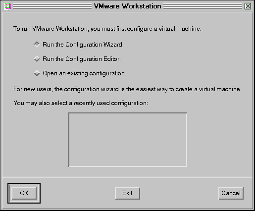
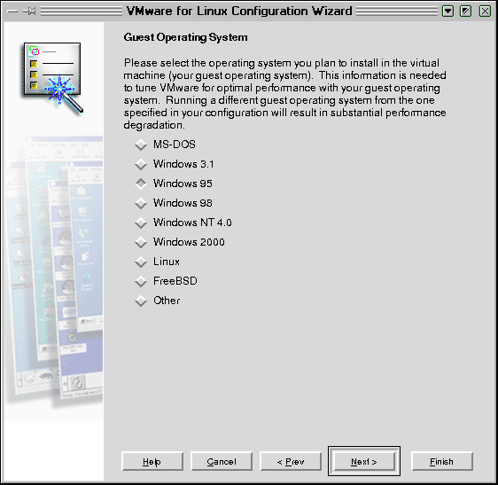
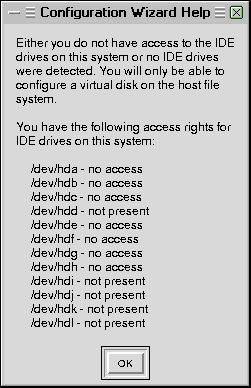

Система VMWare установлена и теперь можно перейти к созданию отдельных
виртуальных машин для каждой из операционных систем, с которыми Вы хотите
работать. Как пишут разработчики, "процесс создания виртуальной машины подобен
сборке реального компьютера, только без риска уронить и потерять мелкий винтик
или сжечь микросхему из-за разряда статического электричества".
Прежде, чем создавать виртуальную машину, нужно решить для себя вопрос о том,
будет ли эта машина использовать виртуальные жесткие диски, которые представляют
собой файлы на реальном диске (этот вариант проще и поэтому предпочтительнее для
начинающих пользователей VMWare), либо будет работать напрямую с реальным
диском. В первом случае Вам придется установить операционную систему на
виртуальный диск заново. Во втором случае можно либо заново установить ОС на
имеющийся диск (если там не было этой ОС), либо запустить на виртуальной машине
операционную систему, ранее установленную на жестком диске. Второй вариант
особенно привлекателен для тех, у кого уже были установлены несколько ОС и
использовалась многовариантная загрузка. У меня, например, уже были установлены
на жесткий диск Windows NT Server, Windows NT Workstation и Windows 95. Для
выбора ОС при загрузке я использовал OS Loader от Windows NT. Поэтому я,
естественно, хотел запускать на виртуальном компьютере ранее установленную ОС.
Однако фирма VMware рекомендует устанавливать операционную систему на реальный
диск только опытным пользователям (имеются в виду те пользователи, которые же
хотя бы немного поработали с системой VMware, запуская вторичную ОС с
виртуального диска). Если Вы выберите вариант установки виртуальной машины в
существующий раздел жесткого диска (a "raw" disk), то предварительно внимательно
прочитайте раздел об особенностях установки ОС на реальный диск.
Отметим, что если Вы хотите, чтобы создаваемая виртуальная машина имела
доступ к физическому диску, надо либо запускать vmware от имени root-а, либо
предварительно дать права доступа (chmod 666 hda) к дискам тому пользователю, от
имени которого Вы будете запускать систему виртуальных машин.
Конфигурация виртуальной машины сохраняется в виде простого текстового файла.
Для его создания воспользуйтесь следующей процедурой:
- Запустите программу VMware
vmware
Исполняемый файл vmware находится в каталоге /usr/bin/vmware,
так что должен запускаться без указания полного пути. Если не запускается, Вы
должны указать путь. Если Вы используете оболочку csh или tcsh,
Вам, возможно, потребуется запустить команду rehash для того, чтобы
система автоматически находила исполняемый файл.
После запуска появляется окно следующего вида
Рис. 18.1. Окно
системы VMWare
и предложение выбрать один из трех вариантов дальнейших действий:

Рис. 18.2.
- воспользоваться мастером конфигурации - скриптом, который поможет Вам
пройти процесс создания виртуального компьютера;
- запустить редактор конфигурации:
- открыть существующую конфигурацию.
Если Вы только что установили ПО VMWare, то лучше выбрать первый из этих
вариантов (действия при выборе второго варианта мы подробно рассмотрим чуть
позже, в разделе "Конфигурирование виртуальной
машины").
- Итак, отмечаем на этом экране первый вариант и нажимаем экранную клавишу
"Ok". Мастер конфигурации выдает следующее приглашение:
Рис.
18.3.
После этого мастер конфигурации предложит Вам ответить на серию вопросов.
Вы должны будете либо выбрать один из возможных вариантов, либо ввести
необходимую информацию в строку ввода. После ответа на вопрос надо нажать
экранную клавишу "Next". При необходимости можно вернуться на один или
несколько шагов назад, воспользовавшись клавишей "Prev". Щелчок по клавише
"Help" приводит к появлению контекстно-зависимой подсказки. В тексте подсказки
встречаются гипертекстовые ссылки (выделены голубым цветом), по которым можно
перейти к соответствующей теме подсказки.
На первом этапе мастер конфигурации предлагает выбрать операционную
систему, которая будет установлена на создаваемую виртуальную машину:

Рис. 18.4.
Эта информация используется для выбора некоторых значений по умолчанию,
таких как объем необходимого дискового пространства, а также для выбора имен
файлов, ассоциированных с данной виртуальной машиной.
Выбираем ОС (в дальнейшем показан случай, когда устанавливается Windows 95)
и снова щелкаем "Next". Теперь надо задать имя каталога, в котором будут
храниться все конфигурационные файлы данного виртуального компьютера. Для
каждого отдельного виртуального компьютера должен быть создан отдельный
каталог с конфигурационными файлами. По умолчанию мастер предлагает создать
такой каталог в Вашем домашнем каталоге. Наверное, с этим стоит согласиться.
Если вздумаете менять имя каталога, то подумайте о том, имеете ли Вы право
записи в указанный каталог.
Рис.
18.5.
- На следующем шаге необходимо выбрать тип диска: новый виртуальный или
реальный физический диск:
Рис.
18.6.
Как уже было отмечено, для использования реального диска надо иметь право
записи на него. Если Вы запустили vmware не от имени root-а, то рискуете
увидеть сообщение о том, что единственно возможный для Вас выбор - это
виртуальный диск:

Еще раз напомню, что использование реального диска - довольно опасная вещь
и фирма предлагает делать это только опытным пользователям. Поэтому прежде,
чем подключать реальные диски к виртуальной машине, прочитайте следующие предостережения, описание особенностей
установки ОС на реальный диск и тщательно обдумайте свои действия.
- Если Вы выбрали вариант установки вторичной ОС на виртуальный диск, то
далее необходимо определить размер этого виртуального диска (то есть файла,
который будет моделировать реальный диск).
Рис.
18.7.
Размер виртуального диска должен быть достаточно большим, чтобы разместить
не только ОС, но и прикладное ПО (с учетом возможности установить впоследствии
что-то дополнительно). Позднее увеличить размер виртуального диска будет
невозможно, хотя и можно будет создать дополнительные виртуальные диски.
Например, для установки операционной системы типа Windows 95 вместе с
Microsoft Office требуется примерно 500 МБ. Если у Вас достаточно свободного
места на диске, то лучше всего сразу отвести для виртуального диска порядка
2000 мегабайт. В любом случае приходиться находить компромисс между имеющимися
ресурсами и своими представлениями о тех задачах, которые Вы будете решать с
помощью виртуальной машины. Но, как следует из сообщения, выдаваемого мастером
конфигурации, можно задать размер виртуального диска, превышающий объем
имеющегося у Вас свободного пространства на диске. Все равно размер файла,
моделирующего диск, будет определяться только реальными потребностями
виртуальной машины.
Вопрос о том, как установить ОС на виртуальную машину будет рассмотрен в
отдельном подразделе (смотри раздел 18.7).
В том случае, когда Вы выбрали вариант установки ОС на реальный диске и,
следовательно выбрали эту опцию на предыдущем шаге (см. рис. 18.6), то мастер
установки предлагает определить права доступа к дискам для виртуальной машины:
Рис.
18.8.
Для раздела диска, в котором будет находиться устанавливаемая операционная
система, необходимо дать права как по чтению, так и по записи ("read/write").
Для основной загрузочной записи (Master boot record - MBR) и для других
разделов диска(ов) рекомендуется дать право только на чтение ("read only").
- Далее необходимо подключить CD-ROM (если таковой имеется)
Рис.
18.9.
- и floppy-дисковод:
Рис.
18.10.
При этом предварительно надо размонтировать дискету (или компакт-диск),
если она была смонтирована в рамках базовой ОС. Следует иметь в виду, что при
желании можно отключить или подключить CD-ROM и floppy-дисковод впоследствии,
воспользовавшись пунктом меню "Devices".
- Далее задаем тип подключения виртуальной машины к локальной сети:
Рис.
18.11.
Вариант "Bridged Networking" означает, что виртуальная машина будет
непосредственно подключаться к локальной сети, используя реальную
Ethernet-плату Вашего основного компьютера.
"Host-Only Networking" - означает включение в виртуальную сеть, состоящую
из базового компьютера с его ОС и всех виртуальных машин, запущенных из
VMWare. При этом реальная сеть будет доступна через базовый компьютер, который
будет выполнять роль моста между виртуальной сетью и реальной ЛВС, к которой
подключен Ваш базовый компьютер.
Если Вы здесь выберете опцию "Bridged and Host-Only Networking", то Ваш
виртуальный компьютер будет иметь возможность использовать как реально
существующее Ethernet-соединение Вашего основного компьютера, так и
виртуальную сеть.
Более подробно об опциях подключения к сети можно прочитать в этом материале на сайте разработчика.
- После этого мастер конфигурации предлагает Вам еще раз проверить,
правильно ли Вы задали все параметры виртуальной машины:
Рис.
18.12.
Проверьте правильность задания всех опций (при необходимости можно
вернуться к предыдущим этапам) и щелкните по клавише "Done", чтобы завершить
создание Вашей первой виртуальной машины. Мастер конфигурации выдает финальное
сообщение
Рис.
18.13.
и на этом создание Вашей первой виртуальной машины завершено.
Для того, чтобы создать другие виртуальные машины, повторите шаги 2 - 8.
Однако для того, чтобы можно было эффективно использовать только что
созданную ВМ, необходимо установить так называемые инструменты (VMware Tools) -
дополнительные утилиты и драйвера, поставляемые фирмой вместе с программным
обеспечением поддержки виртуальных машин. В состав этих компонентов входит, в
частности, драйвер видеосистемы. Если его не установить, то виртуальный монитор
будет позволять установить разрешение не выше 600х480. Установка VMware Tools в
текущей версии VMWare (2.01) осуществляется из созданной виртуальной машины,
поэтому вначале кратко рассмотрим процесс ее запуска, а затем вернемся к
установке VMware Tools.


{kind=link}
{kind=link}
{kind=link}
{kind=link}
{kind=link}
{kind=link}
{kind=link}
{kind=link}
{kind=link}
{kind=link}
{kind=link}